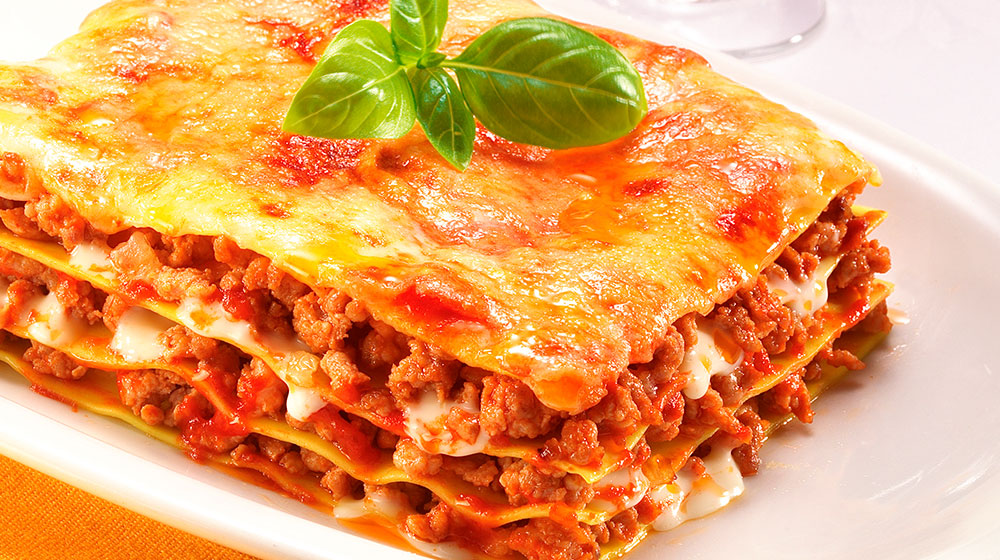

Receta de lasaña
La lasaña tiene sus orígenes en la antigua Roma, donde se hacía con láminas de pasta de sémola de trigo.
Con el tiempo, evolucionó en Europa durante la Edad Media y el Renacimiento, volviéndose más parecida a la lasaña actual, con capas de pasta, carne, queso y salsa bechamel. En Italia, se popularizó y se crearon diversas variantes regionales, como la lasaña alla bolognese en Bolonia.
Con la inmigración italiana en el siglo XIX y principios del XX,
se difundió internacionalmente y se adaptó a diferentes culturas, dando lugar a variaciones como la lasaña mexicana. Hoy en día, la lasaña es un plato globalmente reconocido,
con muchas variaciones y opciones de ingredientes, incluyendo versiones vegetarianas o veganas. Se disfruta en todo el mundo tanto en restaurantes como en hogares.
ingredientes
.jpeg)
¡A Cocinar
- En un tazón, colocar la carne, el ajo en polvo,
el Caldo de Carne de Res MAGGI® 2,
la pimienta molida y marinar por 5 minutos. - En una cacerola grande, colocar el aceite, la cebolla, el ajo, el apio y sofreír por 2 minutos.
- Añadir la carne y cocinar por 10 minutos revolviendo constantemente.
- Cuando la carne adquiera una tonalidad gris clara,
añadir la Salsa de Tomate MAGGI® estilo Boloñesa,
el agua, las hojas de laurel, la sal y pimienta y cocinar a fuego medio por 15 minutos. - Armado de la lasaña: Al momento de montar la lasaña, untar con un poco de aceite un recipiente refractario o la bandeja que utilice. Colocar una pequeña cantidad de salsa,
cubrir el fondo de la bandeja con lascas de pasta precocida,
verter una cantidad pequeña de carne,
añadir el queso mozzarella y una mínima parte de queso parmesano. - Repetir este procedimiento hasta rellenar el recipiente.
Finalmente, colocar una capa de pasta precocida,
la salsa que haya quedado y cubrir con los quesos. La lasaña tiene que tener una buena cantidad de líquido para que la pasta se cocine.
Si está muy seca, se le puede agregar caldo de pollo. - Taparla con papel aluminio y llevar al horno a 150°C por 40 minutos.
- Paso adicional: A esta receta le puede agregar aceitunas negras y hojas de albahaca al momento de cocinar la carne.
untensilios
- Cucharas medidoras
- Cuchillo afilado (un adulto debe usarlo)
- Tabla para picar/cortar
- Taza medidora
- Abrelatas
- Rallador cuadrado (un adulto debe usarlo)
- Sartén grande con tapa (10 pulgadas/25,4 cm)
- Espátula resistente al calor
Informacion Nutricional
| Nutriente | Porción | Valor por porción |
|---|---|---|
| Calorías | 100g | 250 kcal |
| Grasas | 100g | 12g |
| Proteínas | 100g | 15g |
| Carbohidratos | 100g | 25g |
| Fibra | 100g | 3g |